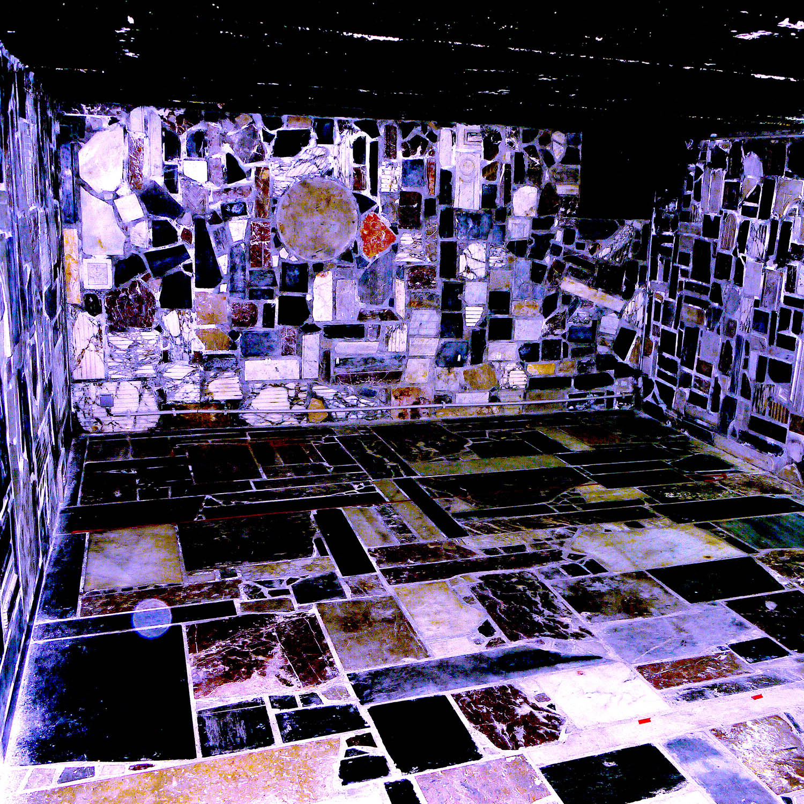

January-June 2020
Experimental writing practise recorded in Hectolitre's basement

#16 Margaux Schwarz and Douglas Eynon - Alternative Currency
Margaux Schwarz and Douglas Eynon muse on the psychic content of transactional relationships in their collaborative production of 'Alternative Currency'
#15 Henry Andersen and Bryana Fritz - Road Movie
Henry Andersen and Bryana Fritz (Slow Reading Club) take us on a journey in an evocative chapter read from 'Road Movie', their novel constituted from existing road literature, its materials handled via manual transcription, stenography, autocorrect and repetition, spitting out the degenerate fantasy of going WEST
#14 Adam Gallagher and Javon Bennett - Funereal Rites
Adam Gallagher and Javon Bennett collaborate - reading their homage, recording in domestic space - to speak the names and experience, past and present, of people who have given their lives and bodies to their work and families, devoted to the making free of themselves and others from contexts of oppression and adversity, reflecting also on continuities between their lives and deaths
#12 Jack Brennan - The Quizz
Jack Brennan hosts, 'The Quizz', recording from an old, very quiet, WW2 era bunker
#11 Patty Zhang - Amy's Artwork
Patty Zhang reads ‘Amy’s Artwork’, a short play about the relationship between a Chinese art student and her father
#10 Daniel Genoves - Erotica for a Flying Bed and Ruined Sun
Daniel Genoves reads ‘Erotica for a Flying Bed and Ruined Sun’, toeing a clean line through an erotic-poetic vision, with the body staged as a plastic and comical site of experience
#9 Emanuel Poche - Kings & self-pity
Emanuel Poche reads 'Kings, picture prompt' telling of a ritual devised by the speaker for freeing himself from behaviours on the paternal side of his family, followed by 'self-pity, an acrostic poem' describing a cast of characters waiting at a tram stop
#8 Camilla Wills - Ten minutes in the other direction
Camilla Wills reads her rose-like composition, unfolding observations of time and space from within a period of mourning, grounded in an artist's catalogue of lived daily events in the city
#7 Eleanor Ivory Weber - Married to the alt-right
Eleanor Ivory Weber reads around the digital frame of an article in the context of the Australian media online, which she engages as part of her ongoing writing project, Sub text labour
#6 Adrijana Gvozdenović - reading archivingartisticanx…
Adrijana Gvozdenović reads from a room in Mumbai, sitting down with http://archivingartisticanxieties.me - her digital gathering space for the scattered dialogue-based approaches to the presentation of critical text-centred practise as a thinking/reading/speaking in performance
#5 Mladen Bundalo - Strings
Mladen Bundalo reads 'Strings', personal travelogues tracking paths in his life and travels beginning in Bosnia Herzegovina
#4 Eleanor Ivory Weber and Camille Gérenton - Word without return
Eleanor Ivory Weber and Camille Gérenton present their Sprechgesang 'Word without return', rethinking orality for a small audience in the basement.
#3 Naomi Quashie - my body narratives
Naomi Quashie's text performance, set to sound, uncovers a creation myth of Earth initiated through the joy existing between two female embodiments of darkness and light, as narrated by a Goddess-like being, alive to themself as a multiple incarnate digital presence.
#2 Pia Louwerens - A Version / Subtracted Stability
Pia Louwerens edits extracts from previously performed texts into this new address reading A Version / Subtracted Stability for us, her sometimes-mentioned-by-name audience.
#1 Jennifer Brewer - Time is Him
Jennifer Brewer reads Chapter One from Book One of Elizabeth in the Woolds, an epic in three parts.
---
Works written to be listened to are performed to be shared online among friends, recorded in Hectolitre's basement every two weeks.
In broadcasting these staged readings, a digital exhibition assembles itself online, taking place over a duration of 6 months.
The project unity is provided by that basement: to which every writer / artist moves, through the city of Brussels, then down creaking stairs into an underground space tiled in stone and marble, where they read something they have made for the listeners, mostly fellow artists themselves contributing to the project.
This is a project of conviviality, of proximity, by necessity coming closer together for a recording in a small chamber: a project centred on the warmth of the voice in a cold room
Photo credit: Jennifer Brewer